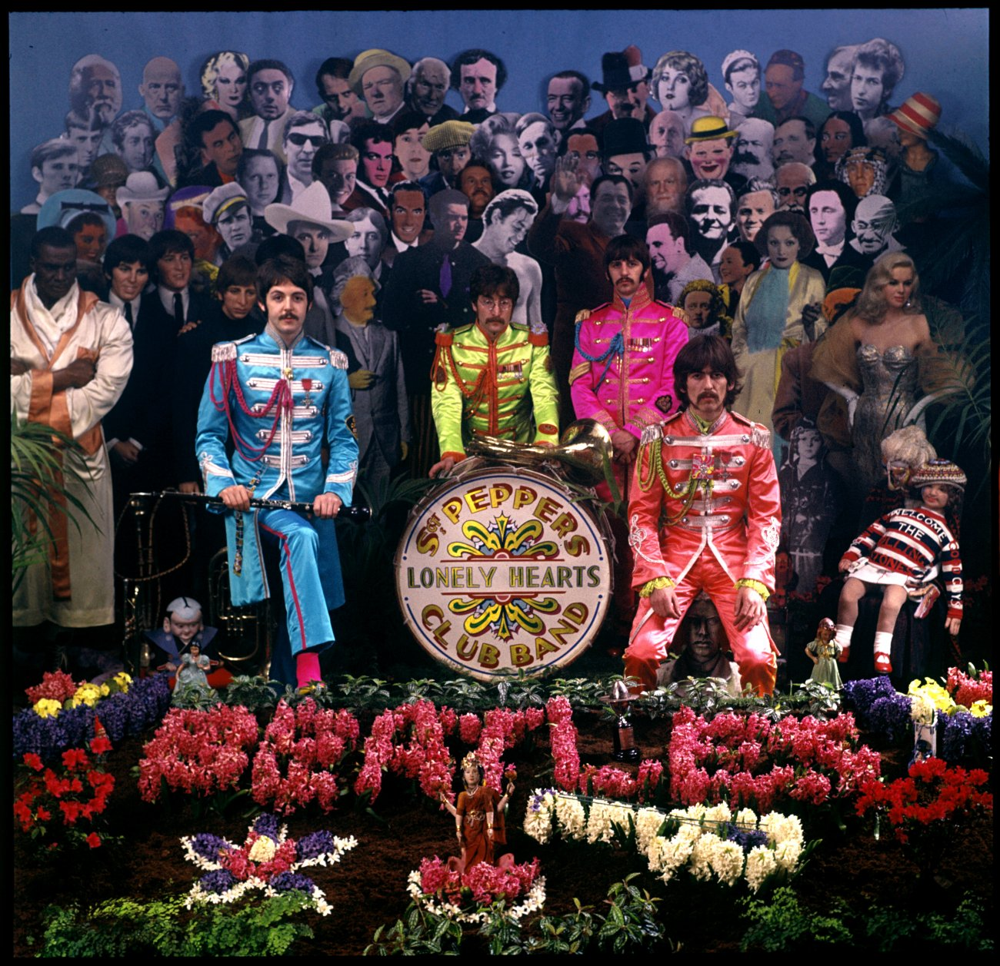
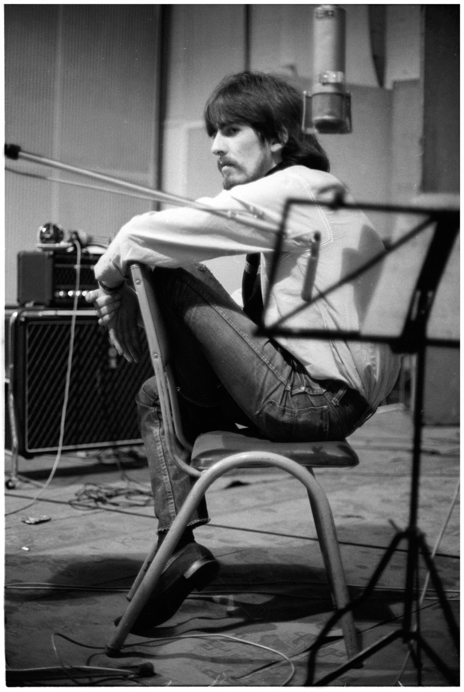
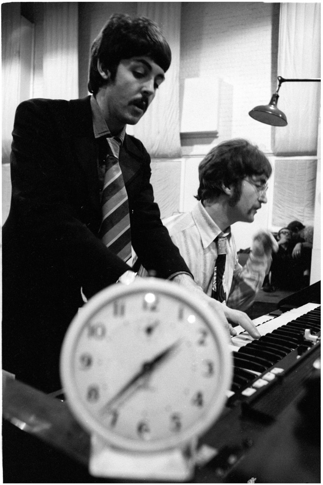

Sgt Peppers Lonely Hearts Club Band

Data de lançamento: 1 de junho de 1967
Lançado em 1º de junho de 1967, Sgt. Pepper's Lonely Hearts Club Band, o oitavo álbum da banda se tornou a trilha sonora do "verão do amor", mas seu apelo é atemporal. No estúdio, os Beatles encorajaram George Martin a alcançar "o impossível" e, por sua vez, George e os engenheiros encontrariam maneiras inovadoras de realizar isso, apesar de ainda usarem apenas equipamentos de quatro faixas.
O trabalho havia começado na gravação no final de 1966 e, em um estágio, pensou-se que Penny Lane e Strawberry Fields Forever também seriam incluídos, mas quando estes foram lançados como single em fevereiro, essa ideia foi abandonada.
Revolver tinha acabado de ser concluído a tempo antes da banda voar em mais uma turnê. Agora que a turnê estava atrás deles, mais tempo poderia ser gasto escrevendo e gravando. Entre novembro de 1966 e abril de 1967, eles passaram mais de 400 horas no estúdio - muito longe dos dias de Please Please Me.
Claro que a música era mais complexa e agora que a turnê acabou, não havia necessidade de considerar o que poderia ser reproduzido na frente de uma plateia ao vivo.
Pela quarta vez no Reino Unido, nenhum single foi retirado do álbum e isso também se manteve verdadeiro nos EUA. O álbum também não foi bandado, incentivando o ouvinte a tocá-lo até o fim, pausando apenas para virar o disco.
Não só a música era diferente, emocionante e colorida, como também era a forma como foi entregue. A carteira dupla brilhante apresentava os caras em seus uniformes Pepper cercados por imagens de pessoas que eles admiravam ou estavam interessados, enquanto na parte de trás da manga havia as letras de todas as músicas. Dentro de cada lado da carteira havia outras surpresas, um cartão com vários recortes e, pelo menos nas prensagens iniciais, a manga interna de papel tinha um design psicodélico.
Na Grã-Bretanha, o álbum atingiu o número #1 e entre junho de 1967 e fevereiro de 1968 passou um total de 27 semanas no topo durante uma execução inicial de 148 semanas. Tudo isso, apesar de uma proibição da BBC em "A Day In The Life".
Nos EUA, o álbum foi lançado exatamente da mesma forma que na Grã-Bretanha... bem quase. O tom agudo e o discurso ilegível embutido no groove do Reino Unido não apareceram no lançamento americano. O álbum desfrutou de uma estadia de quinze semanas no topo dos álbuns Top 200 dos EUA durante sua execução inicial de 88 semanas.

Confie nos Beatles para criar algo diferente! Seu último LP, "Sergeant Pepper's Lonely Hearts Club Band" é uma espécie de concerto. Começa com esse número e termina com ele, exceto por uma peça final chamada "A Day In The Life".

O próximo LP dos Beatles, que já levou mais de sete meses para ser gravado, está finalmente em fase de conclusão. Intitulado 'Sergeant Pepper's Lonely Hearts Club Band', será concluído durante a segunda semana de abril. Entre as faixas agora concluídas estão "A Day In The Life", um solo de John Lennon no qual ele é apoiado por uma orquestra de 41 peças. "When I'm 64", um número de novidade no início do estilo fonográfico com Paul McCartney. "Good Morning, Good Morning, Good Morning", um dueto de John e Paul aumentado pela Sounds Inc, "She's Leaving Home" arranjado por Mike Leander e empregando cordas adicionadas e "Sergeant Pepper's Blues".